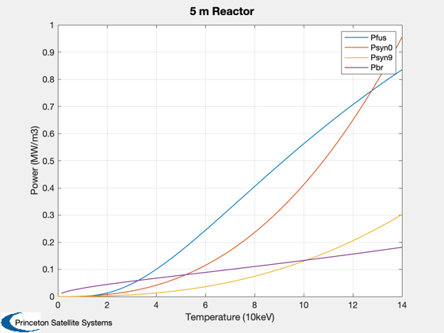
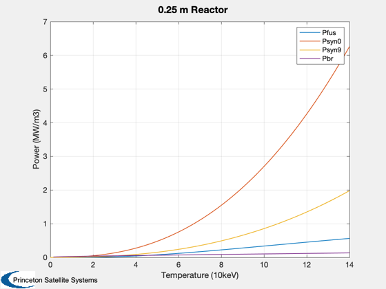

Contents
Synchrotron radiation demo
Reproduce the chart in the reference.
%-------------------------------------------------------------------------- % Reference: Bing-Ren, S. "Possibility of Establishing D-3He Fusion Reactor % Using Spherical Tokamaks", Chinese Physics Letters, 2004 %-------------------------------------------------------------------------- % See also MaxwellianV, PowerDHe3, Synchrotron, Plot2D %-------------------------------------------------------------------------- %-------------------------------------------------------------------------- % Copyright (c) 2018 Princeton Satellite Systems, Inc. % All rights reserved. %-------------------------------------------------------------------------- T = linspace(0,140); nI = [1e20 1e20]/3; zI = [1 2]; b = 2.7; % T L = 2.5; % m rW = 0; p0 = Synchrotron( nI, zI, b, T, L, rW); rW = 0.9; p9 = Synchrotron( nI, zI, b, T, L, rW); d = PowerDHe3; d.nD = nI(1); d.nHe3 = nI(2); d.fT = 0; d.fD = 0; Pf = []; PB = []; for k = 1:length(T) d.tHe3 = T(k); d.tD = T(k); d.tE = T(k); [Pf(k),~,PB(k)] = PowerDHe3(d); end % Reaction Rates sV = MaxwellianV( 'D', 'He3', T ); % Note: cannot exactly reproduce the fusion power curve in the reference. % The reaction rate equation below seems to be off gamma = 0.36031698; a1 = -27.7319978; a2 = -31.058052; a3 = 0.027991287; a4 = -5.3895197e-4; a5 = -2.6589549e-6; sigV = exp(a1./(T.^gamma) + a2 + a3*T + a4*T.^2 + a5*T.^3); Pf2 = 2.93e22*nI(1)*nI(2)*1e-40*sigV; T10 = T/10; Plot2D(T10,[Pf;p0;p9;PB],'Temperature (10keV)','Power (MW/m3)','5 m Reactor'); legend('Pfus','Psyn0','Psyn9','Pbr')
Now repeat for a smaller reactor
Assume Te is only a fraction of Ti
L = 0.2; % m b = 5; % T T = linspace(0,100); rW = 0; p0 = Synchrotron( nI, zI, b, T, L, rW); rW = 0.9; p9 = Synchrotron( nI, zI, b, T, L, rW); d = PowerDHe3; d.nD = nI(1); d.nHe3 = nI(2); d.fT = 0; d.fD = 0; Pf = []; PB = []; for k = 1:length(T) d.tHe3 = T(k); d.tD = T(k); d.tE = T(k); [Pf(k),~,PB(k)] = PowerDHe3(d); end Plot2D(T10,[Pf;p0;p9;PB],'Temperature (10keV)','Power (MW/m3)','0.25 m Reactor'); legend('Pfus','Psyn0','Psyn9','Pbr') %--------------------------------------